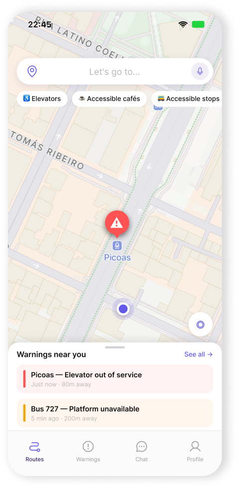
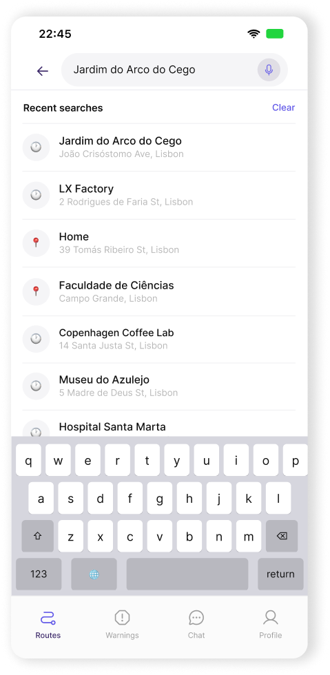
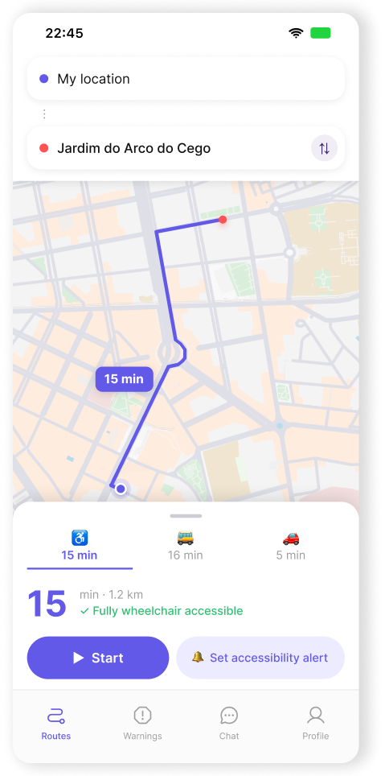
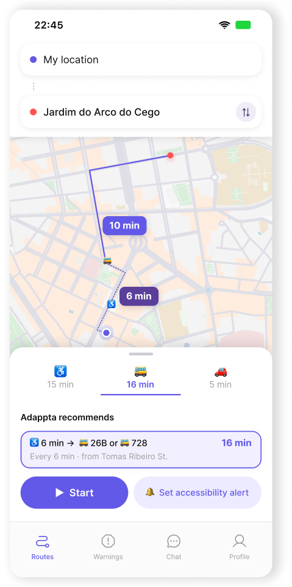
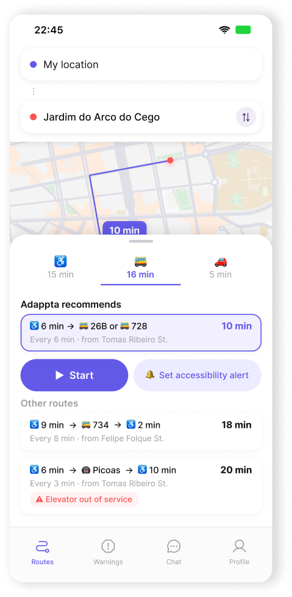
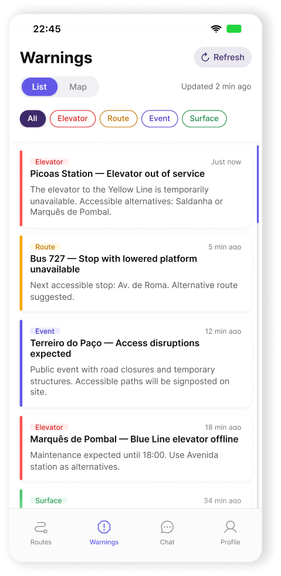
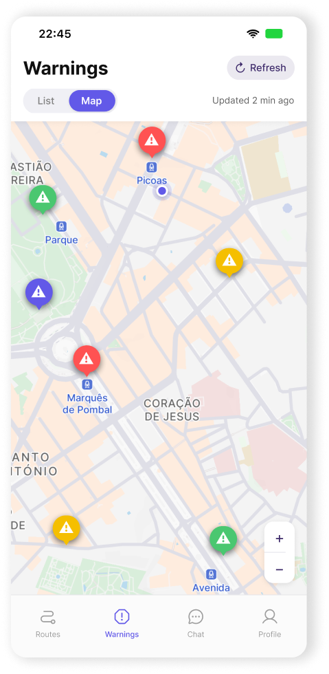
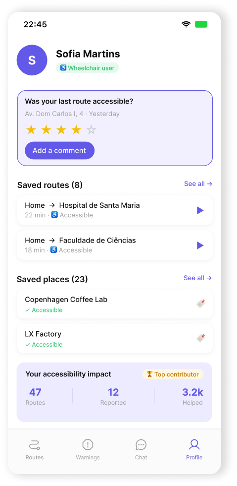

Project Overview
The city belongs to everyone
This academic project was developed across all disciplines of the Design Management programme and it was born from a course-wide challenge: choose one of the UN Sustainable Development Goals and design a product or service that genuinely addresses it.
I chose SDG 10 — Reducing Inequalities, focusing on one of the most tangible and overlooked inequalities in urban life: the inability of people with reduced mobility to move through a city independently and safely. Getting around Lisbon shouldn't require courage.
For wheelchair users and people with reduced mobility, every trip involves invisible planning, checking whether elevators are working, whether ramps exist, whether the pavement is safe. Standard navigation apps weren't built with this in mind. Adappta was.
Research
Three tracks, one clear problem
The research was approached across three tracks, building a layered understanding of the problem before touching any design tool.
Desk Research Articles, reports, and journalism about the daily reality of people with reduced mobility in Portugal were analyzed. Three themes kept surfacing: the need to plan every trip far in advance, the constant conditioning caused by inaccessible infrastructure, and how the lack of accessible routes leads to social exclusion. One headline captured it bluntly: "Lack of accessibility is the biggest problem in Portugal for people with reduced mobility."
Field Research & Survey Ethnographic observation complemented the desk research documenting how people with reduced mobility actually navigated Lisbon, their workarounds, their frustrations, the invisible decisions they make constantly.

User Interviews were conducted with wheelchair users, ranging from 25 to 70 years old, both in person and online, lasting between 30 and 60 minutes each. What emerged was consistent and striking:
These three research tracks converged on the same conclusion: the problem isn't just physical infrastructure. It's the complete absence of a tool that gives people with reduced mobility reliable, real-time information to navigate the city on their own terms.
Persona
Getting to know the people Adappta was designed for
Two personas were developed to represent the range of people Adappta was designed for — different ages, different life contexts, but the same daily struggle with an inaccessible city.


Problem
From research insights to design direction
People with reduced mobility in Lisbon navigate a city that wasn't designed for them, and without tools that reflect their reality. Every trip requires extensive planning, yet the information available is scattered, unreliable, and often simply wrong. The result is exhaustion, frustration, and a quiet form of social exclusion that happens one inaccessible street at a time.
Before any design decisions were made, the full ecosystem was mapped — who people with reduced mobility interact with, what systems they depend on, and where the gaps lie. The Ecosystem Map revealed how many actors surround them daily — family, caregivers, public transport, hospitals, local businesses, city council — yet none connected in a way that supports independent navigation.

The User Journey Map, built around Madalena, traced her experience from planning a weekly trip to Lisbon all the way through to reflecting on it. The emotional arc was consistent: anxiety in the planning phase, brief relief when a viable route was found, and frustration when unexpected barriers appeared.

These insights converged into five design questions:

Strategy & Positioning
Understanding the market before entering it
A SWOT analysis confirmed Addapta's opportunity: an innovative app in an underserved market, with deep personalisation and an inclusion-first certification seal, but dependent on external partnerships to build its data foundation, and exposed to the risk of low initial awareness and future competitors.
Strengths
Personalisation — allows users to select preferences and individual needs. Promotes inclusion and improvements for minorities. Addapta seal — impact designed for minorities, but visible to all. Offering an innovative app that doesn't yet exist in the market.
Weaknesses
Lack of information that can strengthen our business model. Dependency on partnerships and external companies.
Opportunities
Implementation and growth in a non-existent market. Gathering associations and organisations as partners.
Threats
Lack of awareness about our app. New competitors who can imitate the concept. User disengagement.
The competitive landscape reinforced this gap. Google Maps dominates in volume but wasn't designed with accessibility in mind. AccessibleGO, TUR4all, and Guia de Rodas address accessibility more directly but fall short on information depth and personalisation. Adappta sits in a unique position: high information diversity combined with high adaptive personalisation — the only solution that brings together accessible routing, live warnings, community-driven data, and an AI assistant built specifically for people with reduced mobility.
Low info · High personalisation
High info · High personalisation
Low info · Low personalisation
High info · Low personalisation
← Low Information Diversity
High Information Diversity →
↑ High Personalisation
↓ Low Personalisation
Adappta

TUR4all

Guia de Rodas

Accessible GO

Google Maps
Concept
Navigating the city shouldn't require courage
Addapta is a mobile navigation app built from the ground up for people with reduced mobility. Not an accessibility filter added on top of an existing map — a product designed entirely around their needs, from the first screen to the last interaction.
The concept is simple: give people the information they actually need, when they need it, so they can move through the city independently and with confidence.
Accessible Routes
Routes are planned around what actually matters: ramps, elevators, curb cuts, surface quality, and step-free paths. Users can filter by transport mode and save favourite routes.
Real-time Alerts
Real-time alerts about barriers that change daily — broken elevators, blocked ramps, roadworks, events that cut off accessible paths.
Ada, the AI Assistant
A built-in accessibility assistant that answers questions, suggests alternative routes, and proactively alerts users when conditions on their usual paths change.
Community Reviews
Users contribute directly to Addapta's data by rating places and flagging accessibility issues, keeping information accurate and community-validated.
Saved Places
Favourite locations and routes saved and organised into custom lists, with nearby accessible recommendations always at hand.
The Addapta Seal
A certification awarded to places that meet real accessibility standards, visible to all users regardless of mobility — turning inclusion into something the whole city can see and value.
Branding
A visual identity built around inclusion
The Adappta identity was designed to feel confident, warm, and accessible — nothing clinical, nothing cold. The logo combines a rounded, approachable typeface with a custom detail on the "d" that subtly references a wheelchair, connecting the brand to its purpose without being heavy-handed about it.

The colour palette tells the same story as the product. Purple tones bring a sense of trust and forward-thinking. Yellow adds energy and warmth, representing the autonomy the app aims to give its users. And Blue rounds out the palette with openness and calm.
#6F74B9
Accessible Lavender
#735FFF
Mobility Purple
#7C55A2
Innovation Violet
#FFCB00
Independent Yellow
#BEDCF4
Inclusive Blue
#000000
Black Wheel
#FFFFFF
Universal White
Ideation
Mapping the experience before building it
Before moving into high fidelity, the full user flow was mapped — tracing every path a user could take from the moment they open the app to reaching their destination. The flow branches into five main paths: planning a route, checking accessibility warnings, getting help from Ada, contributing reviews, and accessing saved places. All paths converge on the same goal: arriving at the desired location independently and with confidence.

Mid fidelity
The wireframes focused on structure, hierarchy, and interaction logic across the key screens — making sure every path had a clear purpose before moving to visual design.

Warnings
Picoas Station — Elevator out of service
The elevator to the Blue Line is temporarily unavailable.
Bus 727 — Stop with lowered platform unavailable
Next accessible stop: Av. de Roma.
Marquês de Pombal — Blue Line elevator offline
Maintenance expected until 18:00.
Chat (Ada)
Hi! I'm Ada, your accessibility assistant.
Can you check if Picoas station is accessible right now?
⚠️ Elevator out of service. ✅ Accessible nearby: Saldanha (600m) and Marquês de Pombal (800m).
Show me a route to Saldanha?
🚶 Exit via Rua Tomás Ribeiro → Av. da República → Saldanha (ramp available). ~8 min.
Routes — Oceanário de Lisboa
Adappta recommends
♿×6 → 🚌 26B or 🚌 728
Every 6 min · from Tomas Ribeiro St.
♿×9 → 🚌 734 → ♿×2
Every 8 min · from Vasco da Gama
♿×10 → 🚇 Red → ♿×3
Every 8 min · from Oriente Station
Elevator out of service
Prototype & Testing
High fidelity
The high fidelity screens were built in Figma with real Lisbon map data, live content, and accessibility-first interaction patterns throughout. Colour, typography, and the Adappta visual identity were applied across all screens, bringing the brand and the interface together into a fully resolved product.


The map opens immediately, with accessibility quick filters (elevators, accessible cafés, accessible stops) and a live warnings strip at the bottom showing nearby barrier alerts in real time.
Users choose between wheelchair, bus, and car modes. Adappta surfaces the recommended route first, with clear time estimates, accessibility confirmation, and inline warnings when barriers like out-of-service elevators affect the journey.






A dedicated feed of live accessibility alerts, filterable by type (elevator, route, event, surface), viewable in both list and map mode. Each card includes context, timing, and alternative suggestions.

Ada — The AI assistant answers natural language questions, checks real-time accessibility conditions, and suggests alternative routes — all within a conversational interface designed to feel helpful, not clinical.

Users track their saved routes and places, review past trips, rate accessibility, and see their community impact: routes logged, issues reported, and people helped.
The feedback validated the core concept and surfaced key insights:
✓
The app genuinely responds to the real needs of people with reduced mobility
✓
The interface feels simple and the features are clear
✓
The warnings feed and community reviews were highlighted as standout features
✓
The app shows strong potential for use beyond daily routines
✓
The Addapta seal conveys trust and social value
✓
Ada was well received — a voice version was identified as a valuable improvement for in-the-moment assistance
Learnings
What building for inclusion really taught
Research is everything. The quality of the final design was directly proportional to the depth of the research. Talking to wheelchair users, reading their frustrations, and observing how they navigate the city made every design decision sharper and more grounded.
Inclusion is a design challenge, not a checklist. Accessibility can't be added at the end. It has to be the starting point, from the first flow to the last interaction pattern.
Community makes the product. The most valuable insight from testing was that users don't just want to consume information — they want to contribute to it. The warnings feed and review system weren't just features; they were the heart of the product.
A strong concept needs a strong identity. Branding Addapta as a confident, warm, city-facing product — not a clinical assistive tool — changed how people related to it. The seal, the name, the colours all worked together to make inclusion feel desirable, not exceptional.